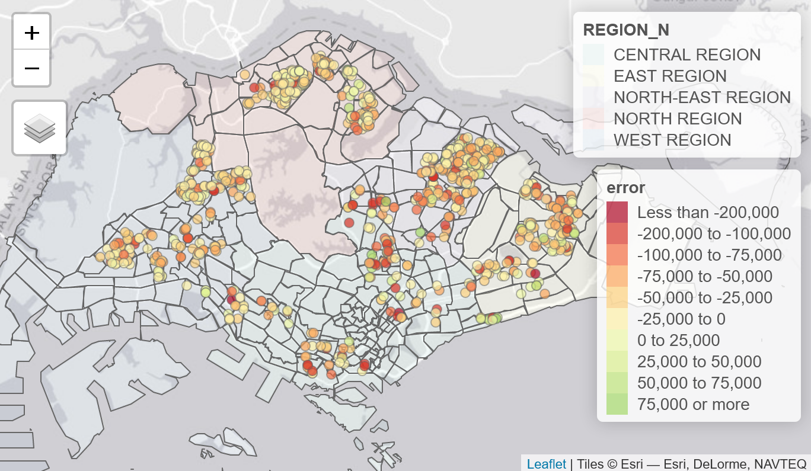
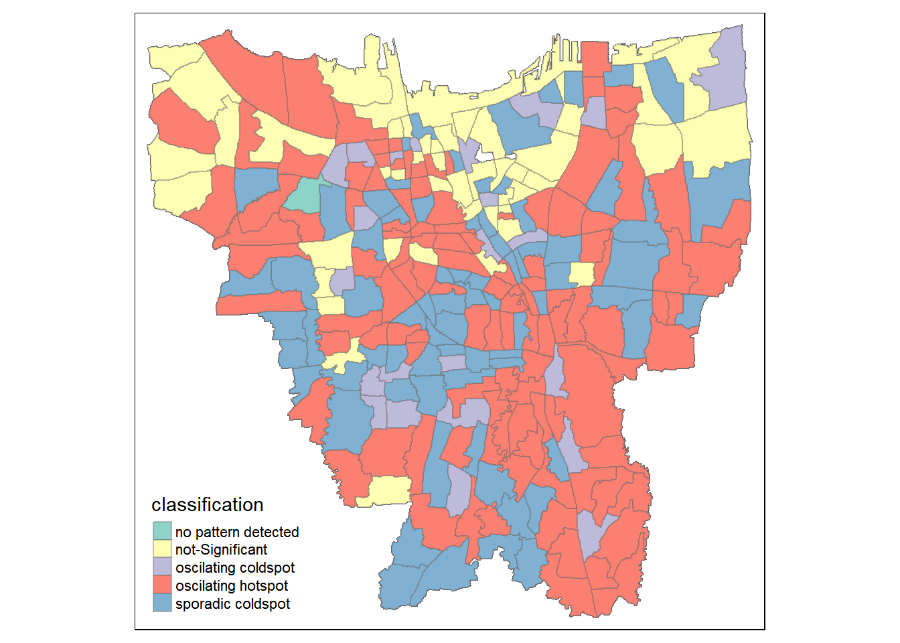
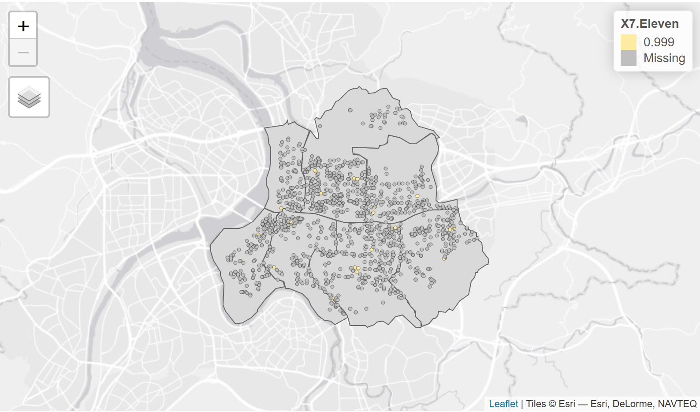
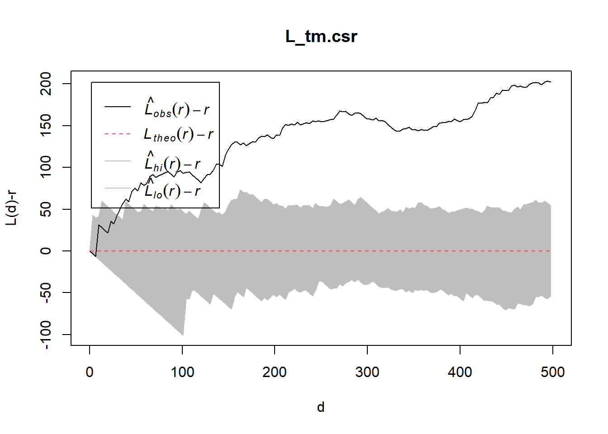
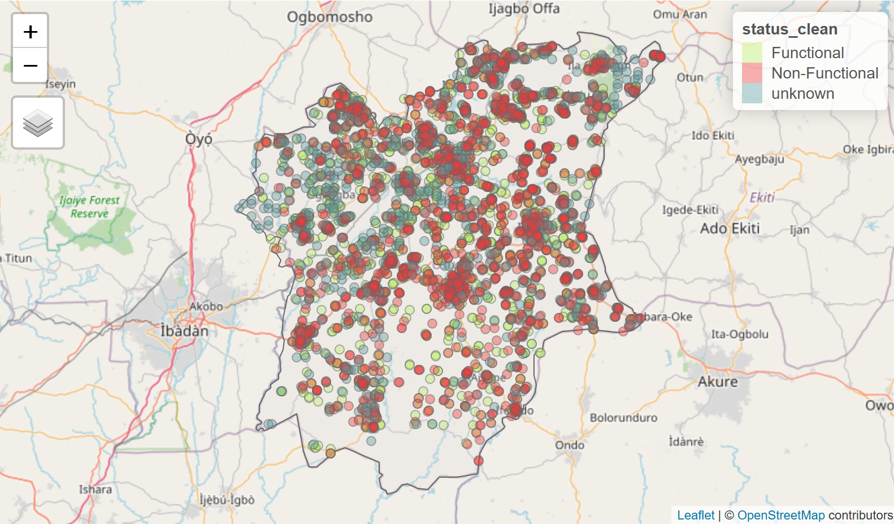
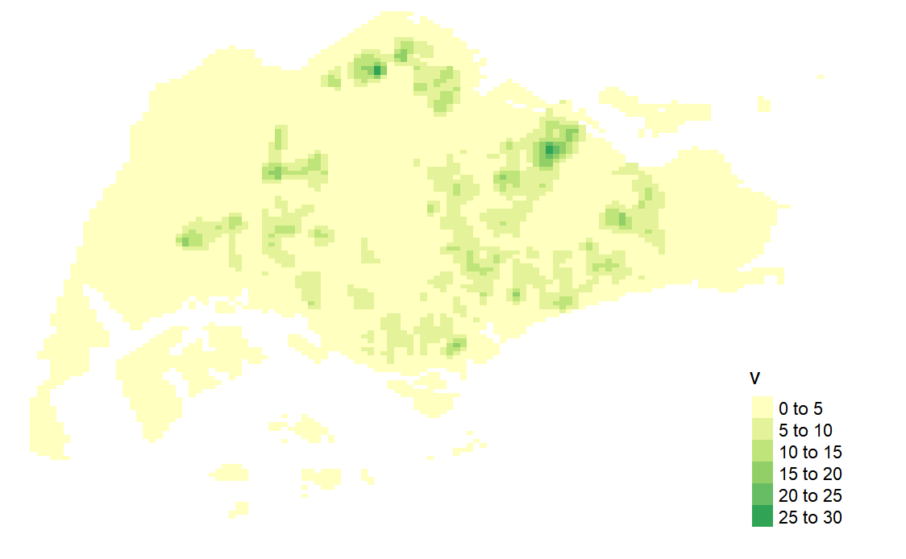
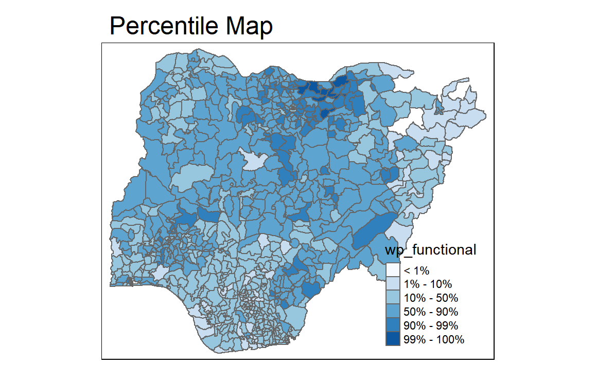
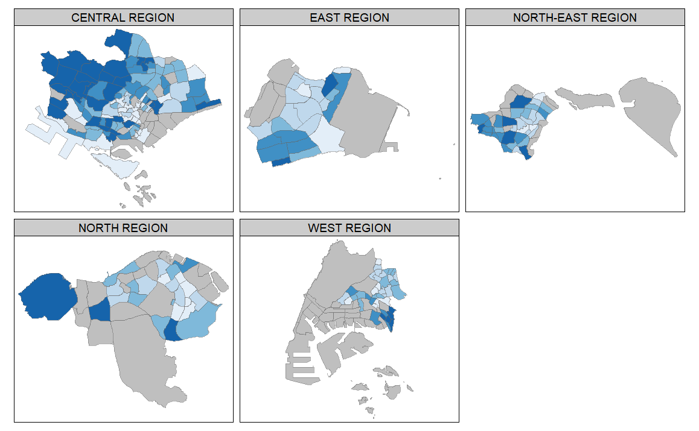
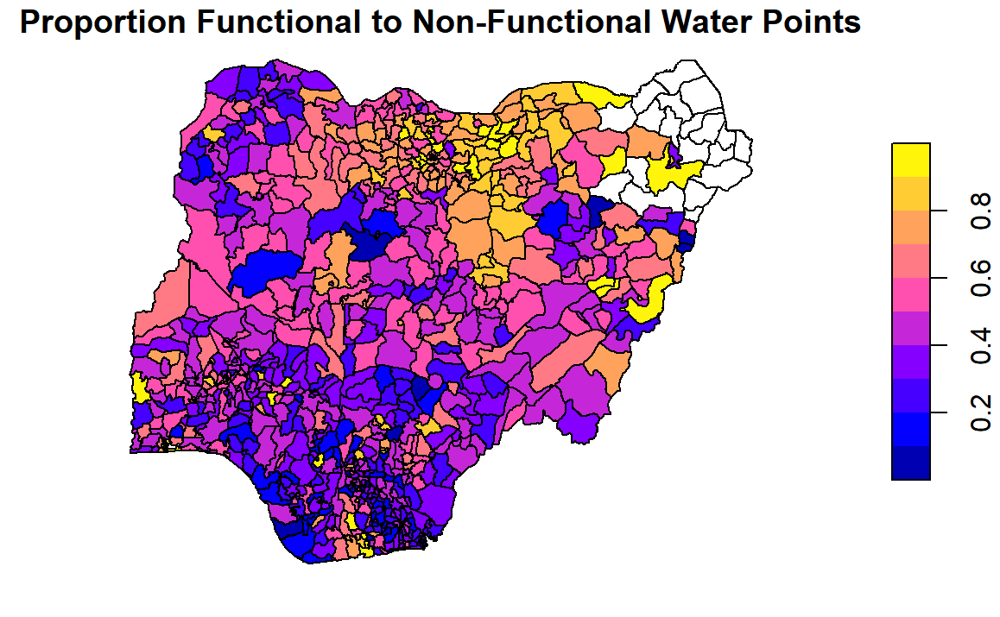
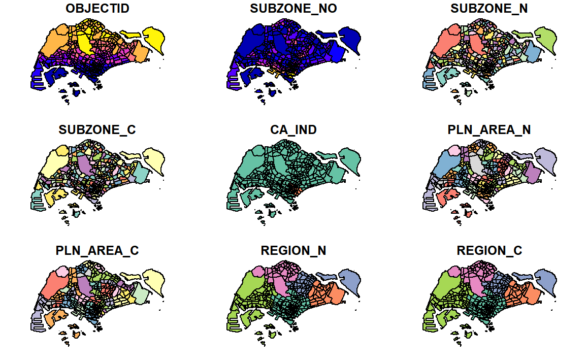

Conducting a Spatial-Temporal Analysis of COVID-19 trends at Sub-district level in Jarkata, Indonesia between June 2021 to May 2022

Computing Contiguity and Distance-Based Weights in Hunan, China

Calculating and Visualising the Local Colocation of 7-Eleven and Family Mart Convenience Store Chains in Taipei

Spatial Point Pattern Analysis of Distribution of Childcare Centres in Singapore

Calculating and discovering the spatial point patterns and geographical distribution of functional and non-functional water points in Osun, Nigeria


Visualising Functional and Non-Functional Water Pumps in Nigeria at LGA level

Chloropleth Mapping of Singapore Resident Planning Area / Subzone, Age, Sex and Type of Dwelling

Visualising proportion of functional and non-functional water pumps in Nigeria at LGA level

In this exercise, I learn how to handle, perform geoprocessing and EDA using sf, tidyverse, ggplot2 and other packages.